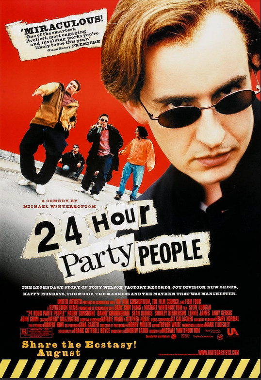

Michael Winterbottom
2002
117 minutes
TITLE: 24 Hour Party People TEXT PLACEHOLDER 221
If you had a nickel for every person who, knowing your tastes, ever aggressively encouraged you to watch this film, then you'd have at least enough to trade in for a quarter or two. And if you had another quarter for how many of those told you some version of how much you remind them of the "main guy" in this film then you might have enough money for laundry.
Upon finally seeing this film years later, you realize exactly how much of "you remind me of the main guy in this film" is decidedly not a compliment. It's not necessarily a complete insult, but it's a much safer thing to tell someone who hasn't seen the film than someone who has seen the film. And the moment you start watching it and realize all this time they've been comparing you to Steve fucking Coogan playing his usual persona leads to a complex mix of feeling slightly insulted and flattered and infuriated all at the same time and wondering what exactly they saw in you that made them make this comparison.
As someone with full access to your inner monologue, you have to admit they aren't completely wrong with this comparison, which is frighteningly apt in a lot of ways. You'd certainly love for them to elaborate if they were still available and you were still on speaking terms with any of these motherfuckers, but for now you'll be left to wonder what exact mix of smart and sketchy and smarmy and weird and pompous and arrogant they're actually calling you out for being. You certainly have a lot of empathy with Coogan's Tony Wilson surrounded by a bunch of psychos and druggies and other fuckups while trying not to get dragged too far into their shenanigans.
Most of this film is about Factory Records and the Madchester scene. Your mother's family is from oop north back in the day, so that alone makes a lot of sense. You love a lot of the music in it. Many of these bands were certainly a staple on the playlists of your college radio show and occasionally made guest appearances on your regular radio show a few years later in Madison. And of course you're delighted that they showed the detail of Ian Curtis watching Werner Herzog's Stroszek with its notorious chickens before hanging himself. That's a choice you're going to have to meditate on for awhile.
Time to choose something different: